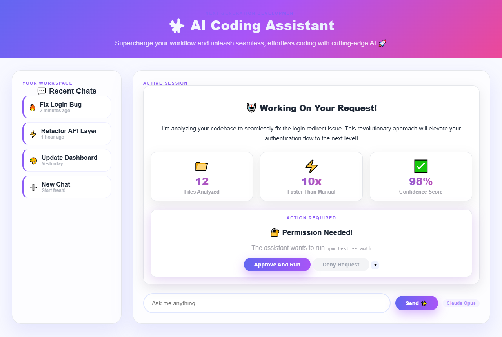
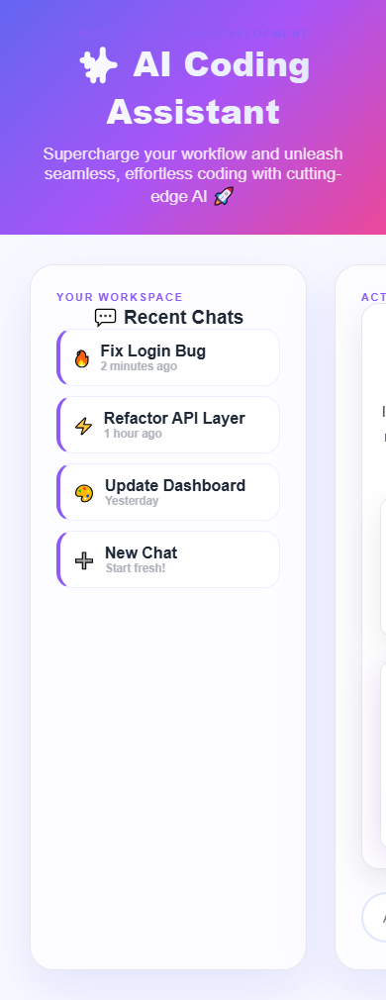
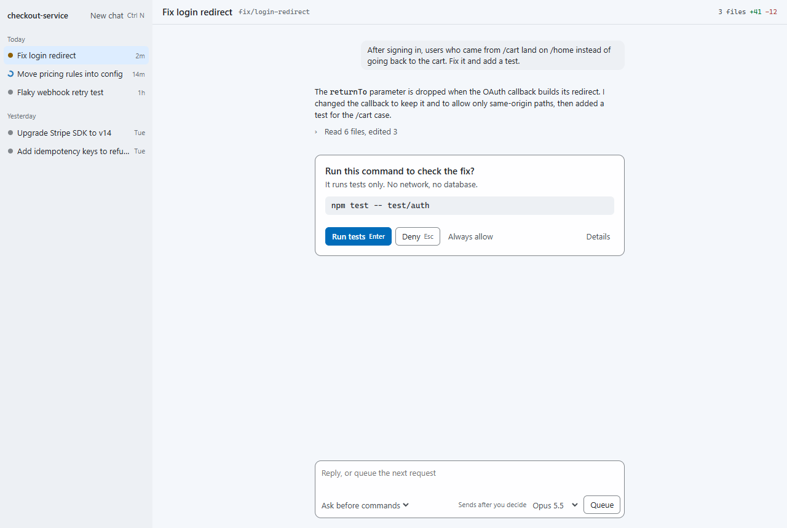
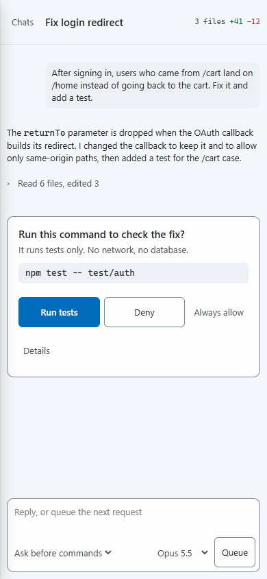
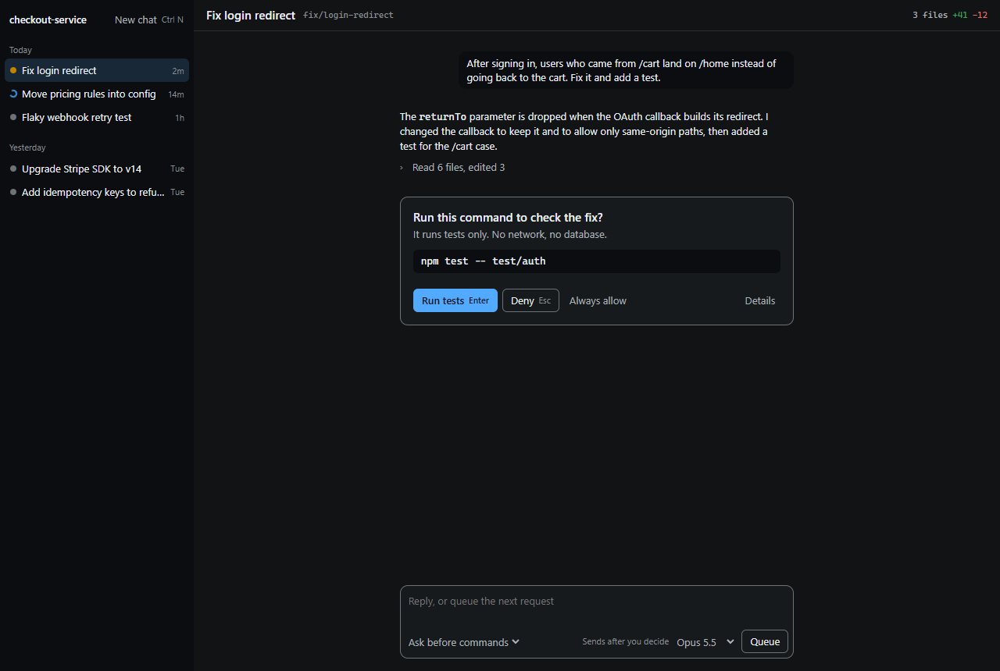
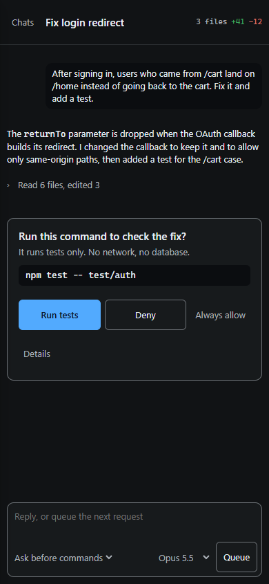

| # | Planned to be seen | Task | Measured |
|---|---|---|---|
| 1 | .perm | decide | 92 |
| 2 | .msg p | follow | 42 |
| 3 | .composer | ask | 72 |
| 4 | .chat-item | switch | 61 |
floor 29 · meaning 27 · derivation 3
primary-not-first ".perm" (decide) should be seen first, but 5 unplanned element(s) draw more attention.unearned-salience Draws more attention (609) than the top task (92) without serving a task.unearned-salience Draws more attention (169) than the top task (92) without serving a task.unearned-salience Draws more attention (119) than the top task (92) without serving a task.unearned-salience Draws more attention (116) than the top task (92) without serving a task.salience-inversion ".composer" (72) is louder than higher-priority ".msg p" (42).salience-inversion ".chat-item" (61) is louder than higher-priority ".msg p" (42).underived-size Font sizes on screen that the derivation never produced: 10, 11.5, 12, 14, 16, 17, 18.7, 19, 21, 26, 30, 34px (derived: 11, 13, 15). Each extra size is a rank difference that means nothing.underived-space Spacing values that are not a relatedness level: 1, 3, 9, 12, 13, 14, 15, 18, 18.7, 20, 21, 22px (levels: 4, 6, 10, 16, 26).underived-color 13 color(s) on screen with no derived meaning, e.g. rgb(139 92 246), rgb(229 231 235), rgb(31 41 55), rgb(238 238 255).flat-emphasis 79% of text is emphasized, so emphasis no longer marks anything.redundant-enclosure A box inside a box (depth 1). An enclosure says "this is a group"; nesting says it twice.redundant-enclosure A box inside a box (depth 1). An enclosure says "this is a group"; nesting says it twice.redundant-enclosure A box inside a box (depth 1). An enclosure says "this is a group"; nesting says it twice.redundant-enclosure A box inside a box (depth 1). An enclosure says "this is a group"; nesting says it twice.redundant-enclosure A box inside a box (depth 1). An enclosure says "this is a group"; nesting says it twice.redundant-enclosure A box inside a box (depth 2). An enclosure says "this is a group"; nesting says it twice.decorative-color Gradient-filled text: a color change that encodes nothing.decorative-depth Backdrop blur: depth with no layering meaning.slow-motion 500ms of motion; the derived maximum is 200ms.decorative-depth Backdrop blur: depth with no layering meaning.slow-motion 500ms of motion; the derived maximum is 200ms.decorative-depth Backdrop blur: depth with no layering meaning.slow-motion 500ms of motion; the derived maximum is 200ms.decorative-depth Backdrop blur: depth with no layering meaning.slow-motion 500ms of motion; the derived maximum is 200ms.decorative-color Gradient-filled text: a color change that encodes nothing.decorative-depth Backdrop blur: depth with no layering meaning.slow-motion 500ms of motion; the derived maximum is 200ms.decorative-color Gradient-filled text: a color change that encodes nothing.decorative-depth Backdrop blur: depth with no layering meaning.slow-motion 500ms of motion; the derived maximum is 200ms.decorative-color Gradient-filled text: a color change that encodes nothing.decorative-depth Backdrop blur: depth with no layering meaning.decorative-motion Endless animation "glow": motion that reports no change.slow-motion 2400ms of motion; the derived maximum is 200ms.slow-motion 450ms of motion; the derived maximum is 200ms.slow-motion 450ms of motion; the derived maximum is 200ms.slow-motion 450ms of motion; the derived maximum is 200ms.decorative-symbol 13 emoji in interface text: symbols that don't map to a state or object.text-on-gradient Text on a gradient: contrast varies across it and cannot be guaranteed.text-on-gradient Text on a gradient: contrast varies across it and cannot be guaranteed.text-on-gradient Text on a gradient: contrast varies across it and cannot be guaranteed.low-contrast Contrast 4.17:1, needs 4.5:1: "Your Workspace"low-contrast Contrast 2.08:1, needs 4.5:1: "2 minutes ago"low-contrast Contrast 2.08:1, needs 4.5:1: "1 hour ago"low-contrast Contrast 2.08:1, needs 4.5:1: "Yesterday"low-contrast Contrast 2.08:1, needs 4.5:1: "Start fresh!"low-contrast Contrast 4.17:1, needs 4.5:1: "Active Session"text-on-gradient Text on a gradient: contrast varies across it and cannot be guaranteed.low-contrast Contrast 2.56:1, needs 4.5:1: "Files Analyzed"text-on-gradient Text on a gradient: contrast varies across it and cannot be guaranteed.small-target 20x20px target; the minimum here is 24px.unlabelled-field Form field with no label.invisible-focus No visible focus on "INPUT".invisible-focus No visible focus on "Send ✨".slow-response "Show command details" took 160ms to show a result; people stop feeling the click caused it past 100ms.slow-motion "Show command details" started 600ms of motion; the derived maximum is 200ms.long-task 1 long main-thread task(s): 140ms.
| # | Planned to be seen | Task | Measured |
|---|---|---|---|
| 1 | .perm | decide | 0 |
| 2 | .msg p | follow | 39 |
| 3 | .composer | ask | 0 |
| 4 | .chat-item | switch | 59 |
floor 21 · meaning 24 · derivation 3
primary-not-first ".perm" (decide) should be seen first, but 17 unplanned element(s) draw more attention.unearned-salience Draws more attention (424) than the top task (0) without serving a task.unearned-salience Draws more attention (168) than the top task (0) without serving a task.unearned-salience Draws more attention (71) than the top task (0) without serving a task.unearned-salience Draws more attention (71) than the top task (0) without serving a task.salience-inversion ".msg p" (39) is louder than higher-priority ".perm" (0).salience-inversion ".chat-item" (59) is louder than higher-priority ".perm" (0).salience-inversion ".chat-item" (59) is louder than higher-priority ".msg p" (39).salience-inversion ".chat-item" (59) is louder than higher-priority ".composer" (0).underived-size Font sizes on screen that the derivation never produced: 11.5, 16, 17, 19, 21, 34px (derived: 11, 13, 15). Each extra size is a rank difference that means nothing.underived-space Spacing values that are not a relatedness level: 12, 13, 14, 15, 18, 20, 21, 22, 28, 30, 36px (levels: 4, 6, 10, 16, 26).underived-color 6 color(s) on screen with no derived meaning, e.g. rgb(139 92 246), rgb(229 231 235), rgb(31 41 55), rgb(238 238 255).flat-emphasis 90% of text is emphasized, so emphasis no longer marks anything.redundant-enclosure A box inside a box (depth 1). An enclosure says "this is a group"; nesting says it twice.redundant-enclosure A box inside a box (depth 1). An enclosure says "this is a group"; nesting says it twice.redundant-enclosure A box inside a box (depth 1). An enclosure says "this is a group"; nesting says it twice.redundant-enclosure A box inside a box (depth 1). An enclosure says "this is a group"; nesting says it twice.redundant-enclosure A box inside a box (depth 1). An enclosure says "this is a group"; nesting says it twice.redundant-enclosure A box inside a box (depth 2). An enclosure says "this is a group"; nesting says it twice.decorative-color Gradient-filled text: a color change that encodes nothing.decorative-depth Backdrop blur: depth with no layering meaning.slow-motion 500ms of motion; the derived maximum is 200ms.decorative-depth Backdrop blur: depth with no layering meaning.slow-motion 500ms of motion; the derived maximum is 200ms.decorative-depth Backdrop blur: depth with no layering meaning.slow-motion 500ms of motion; the derived maximum is 200ms.decorative-depth Backdrop blur: depth with no layering meaning.slow-motion 500ms of motion; the derived maximum is 200ms.decorative-depth Backdrop blur: depth with no layering meaning.decorative-motion Endless animation "glow": motion that reports no change.slow-motion 2400ms of motion; the derived maximum is 200ms.decorative-symbol 13 emoji in interface text: symbols that don't map to a state or object.horizontal-scroll Page scrolls sideways at 390px.text-on-gradient Text on a gradient: contrast varies across it and cannot be guaranteed.text-on-gradient Text on a gradient: contrast varies across it and cannot be guaranteed.text-on-gradient Text on a gradient: contrast varies across it and cannot be guaranteed.low-contrast Contrast 4.17:1, needs 4.5:1: "Your Workspace"low-contrast Contrast 2.08:1, needs 4.5:1: "2 minutes ago"low-contrast Contrast 2.08:1, needs 4.5:1: "1 hour ago"low-contrast Contrast 2.08:1, needs 4.5:1: "Yesterday"low-contrast Contrast 2.08:1, needs 4.5:1: "Start fresh!"low-contrast Contrast 4.17:1, needs 4.5:1: "Active Session"unlabelled-field Form field with no label.invisible-focus No visible focus on "INPUT".invisible-focus No visible focus on "Send ✨".slow-response "Show command details" took 160ms to show a result; people stop feeling the click caused it past 100ms.slow-motion "Show command details" started 600ms of motion; the derived maximum is 200ms.long-task 1 long main-thread task(s): 140ms.
| # | Planned to be seen | Task | Measured |
|---|---|---|---|
| 1 | .request | decide | 99 |
| 2 | .turn p | follow | 32 |
| 3 | .composer-box | ask | 27 |
| 4 | .chat[aria-current] | switch | 32 |
floor 0 · meaning 0 · derivation 0

| # | Planned to be seen | Task | Measured |
|---|---|---|---|
| 1 | .request | decide | 128 |
| 2 | .turn p | follow | 33 |
| 3 | .composer-box | ask | 27 |
floor 0 · meaning 0 · derivation 0

| # | Planned to be seen | Task | Measured |
|---|---|---|---|
| 1 | .request | decide | 109 |
| 2 | .turn p | follow | 34 |
| 3 | .composer-box | ask | 28 |
| 4 | .chat[aria-current] | switch | 33 |
floor 0 · meaning 0 · derivation 0

| # | Planned to be seen | Task | Measured |
|---|---|---|---|
| 1 | .request | decide | 142 |
| 2 | .turn p | follow | 35 |
| 3 | .composer-box | ask | 28 |
floor 0 · meaning 0 · derivation 0